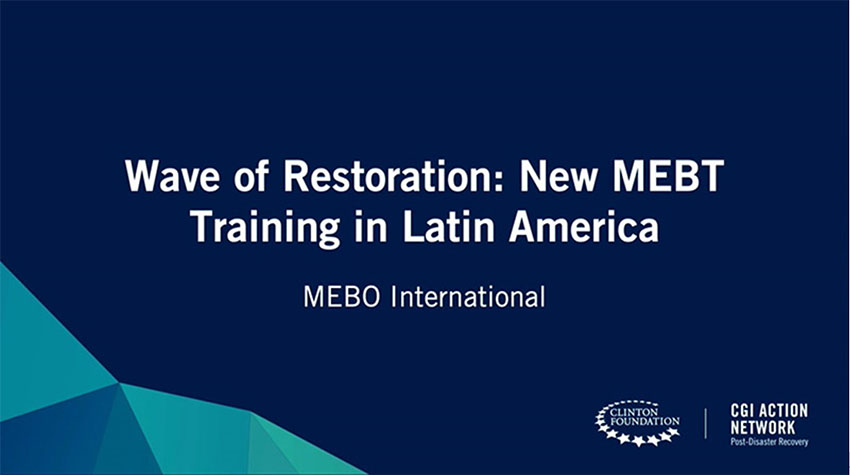
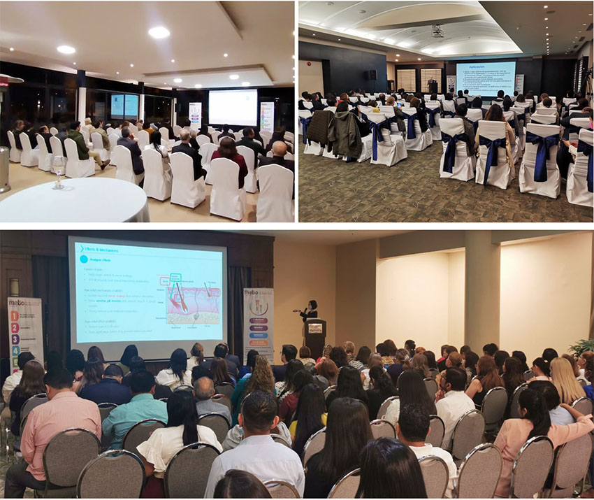
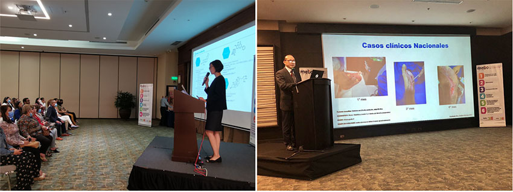
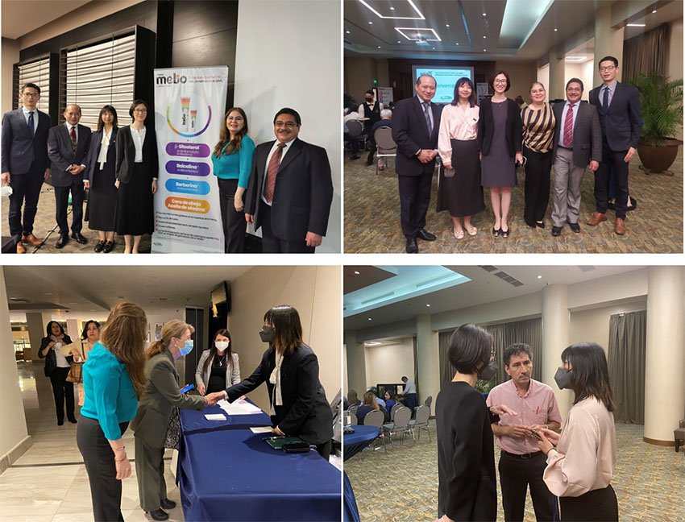

Em 2019, Kevin Xu, presidente da MEBO International, anunciou no encontro da Fundação Clinton que a MEBO International se uniria à Fundação Clinton para oferecer capacitação em tecnologia médica regenerativa em toda a América Latina — o programa 'Onda Regenerativa — Treinamento MEBT na América Latina'. Adiado pela pandemia, o compromisso foi renovado em 2022: junto com seu parceiro latino-americano Difare, a MEBO International reiniciou oficialmente a Onda Regenerativa em setembro, cumprindo a promessa de capacitar 160 profissionais médicos da região.

A primeira sessão aconteceu em Quito em 6 de setembro, com mais de 50 profissionais de saúde locais presentes, conectados ao vivo a um segundo local em Cuenca com mais de 40 participantes. A sessão também foi transmitida online, permitindo que mais 188 profissionais de toda a América Latina aprendessem e interagissem em tempo real.
A segunda sessão, realizada em Guayaquil em 7 de setembro, teve resposta ainda mais calorosa — os clínicos locais aplicam a tecnologia médica regenerativa há mais tempo e com uma base mais sólida. Uma sessão planejada para 80 participantes acabou recebendo mais de 100, obrigando os organizadores a adicionar lugares na hora.

Os participantes vieram de hospitais públicos, hospitais privados e clínicas, abrangendo queimaduras, cirurgia plástica, endocrinologia, ginecologia e pediatria — evidência do amplo reconhecimento local da tecnologia. A mídia local acompanhou as sessões de perto, com entrevistas e cobertura in loco.

O currículo cobriu dois temas: o desenvolvimento global da tecnologia médica regenerativa e seu progresso atual na América Latina. Xu Weiwei, diretora do Escritório de Pequim da Sociedade Internacional de Medicina Regenerativa e Reparo de Feridas, apresentou sistematicamente a história, as patentes e os mecanismos da tecnologia — proporcionar um ambiente úmido fisiológico, aliviar a dor, controlar a inflamação, prevenir infecções, melhorar cicatrizes, liquefazer tecido necrótico e promover a regeneração da pele in situ — junto a pesquisas clínicas globais recentes e estudos de casos complexos.
O assessor médico da Difare, Eduardo Pactong, explicou em seguida os princípios TIME do preparo do leito da ferida e como a tecnologia médica regenerativa responde a cada etapa, enfatizando seu excelente perfil de segurança e sua importância para gestantes, recém-nascidos e crianças. Ele compartilhou casos latino-americanos bem-sucedidos em queimaduras, pé diabético e cirurgia plástica, e apresentou o mebo.education, o site acadêmico com os mais recentes desenvolvimentos globais do campo.

Em uma animada sessão de perguntas e respostas, os palestrantes responderam a mais de vinte perguntas — dos efeitos sobre os níveis de fator de crescimento epitelial à combinação com outras terapias e procedimentos padronizados. Em 2019, prometemos capacitar 160 profissionais de saúde latino-americanos; três anos depois, superamos amplamente essa meta ao formar 400. A MEBO International continuará expandindo os programas de capacitação em toda a América Latina, trazendo alívio e benefício a mais pacientes.